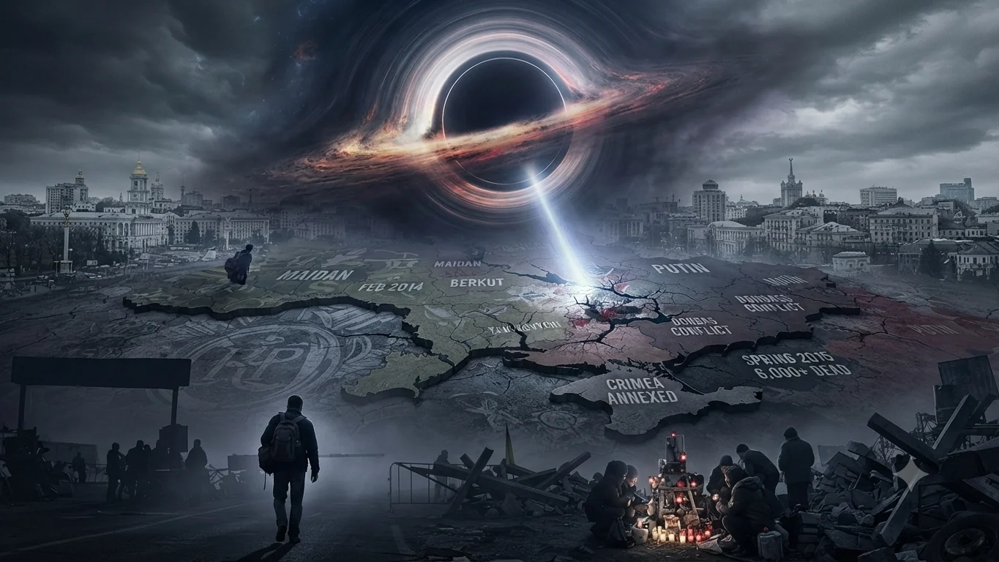

Bazen iyi bir belgesel, bildiğinizi sandığınız bir konuya başka bir açıdan bakmanızı sağlar. Aşağıdaki kategorilerde ilginizi çeken başlığı seçebilir; doğadan sağlığa, toplumdan tarihe uzanan yapımları kendi merakınıza göre keşfedebilirsiniz.
Doğa & Çevre
Vahşi yaşamın gündelik mücadelesinden okyanusların görünmeyen derinliklerine kadar, bu yapımlar canlıların birbirine ve çevresine nasıl bağlı olduğunu gösterir. Ekosistemlerdeki değişimleri ve insan etkisini de ele alarak doğanın ne kadar hassas, ama aynı zamanda ne kadar dirençli olduğunu düşündürür.
Doğa ve çevre belgesellerini keşfetSağlık & Yaşam
Ne yediğimiz, nasıl yaşadığımız ve sağlık hizmetlerine nasıl eriştiğimiz birbirinden bağımsız konular değil. Bu kategorideki belgeseller; beslenme alışkanlıklarını, gıda üretimini, sağlık politikalarını ve tüketim tercihlerini gündelik hayatla ilişkilendirerek kararlarımızın ardındaki koşulları sorgular.
Sağlık ve yaşam belgesellerini keşfetSiyaset & Toplum
Kararları kimlerin aldığı, kaynakların nasıl paylaşıldığı ve insanların bu düzen içinde nasıl bir yer bulduğu bu hikâyelerin odağında. Politika, ekonomi, göç ve toplumsal yapıları ele alan yapımlar, haberlerde gördüğümüz olayların arka planındaki ilişkileri anlamaya yardımcı olur.
Siyaset ve toplum belgesellerini keşfetBilim & Tarih
Bir keşfin nasıl mümkün olduğunu, geçmişte alınan kararların bugünü nasıl şekillendirdiğini ya da sporun bir toplum için ne ifade ettiğini merak edenlere… Bu başlık; bilimsel fikirlerin gelişimini, tarihî dönüm noktalarını ve spor kültürünün insan hikâyelerini bir araya getirir.
Bilim ve tarih belgesellerini keşfet